Medical
Baseline assessment, treating-physician coordination, regular monitoring and final medical clearance.
A note from our founder
A personal introduction to the purpose behind the journey.
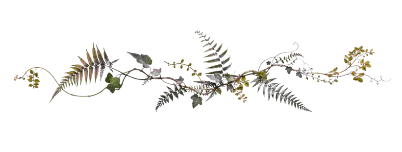
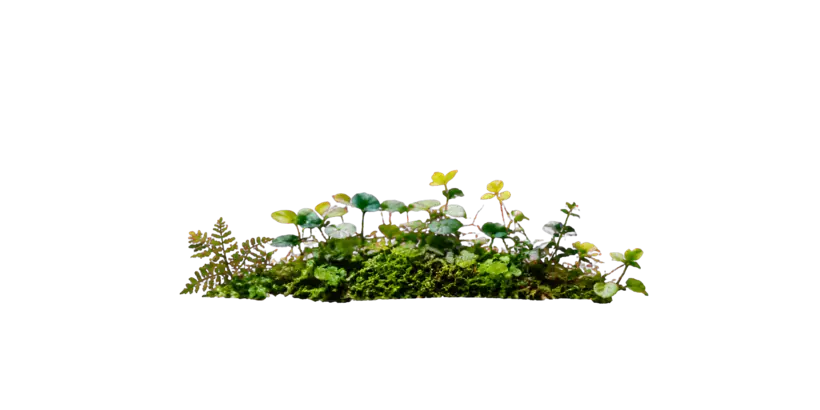
The purpose
We are bringing people living with Type 2 diabetes together to prepare carefully, act visibly and learn responsibly.
A diagnosis can become more than a medical condition. It can become a psychological boundary, making people believe that certain experiences, ambitions and adventures are no longer meant for them. We want to challenge that belief.
Diabetes requires awareness, preparation and responsibility, but it should not automatically require a smaller life. With appropriate medical guidance, thoughtful planning and preparation, regular monitoring and the right support, people living with Type 2 diabetes can continue to pursue adventures, ambitions and challenging goals that are meaningful to them.
Take your health seriously, but do not allow your diagnosis to define the boundaries of your life.
The expedition also offers an opportunity to observe how sustained physical activity at altitude may affect glucose regulation in appropriately selected people living with Type 2 diabetes.
Existing research is limited and not fully consistent. Some studies suggest that hypoxia may be associated with lower glucose levels or improved glucose utilisation. However, the available evidence is still limited and does not establish altitude as a treatment for diabetes. We will therefore study and document the experience responsibly, without claiming that climbing a mountain can reverse diabetes.
The initiative is hypothesis-generating, not a clinical trial or treatment claim. Even if the summit is not reached, every participant returning safely and well is the priority.
This expedition is not only about the people who participate in this Expedition. It is also about inspiring millions of people living with Type 2 diabetes to believe that change is possible and to begin taking meaningful action to realize that possibility.
For someone with diabetes, climbing a mountain represents every difficult first step: changing a habit, improving sleep, becoming more active, eating differently, managing stress. By showing what people can achieve through preparation, discipline and support, we hope to encourage others across the world to begin their own journey toward better metabolic health and a life of greater possibility.
Each one’s “mountain” may look different. What matters is taking that first step towards conquering the mountain.
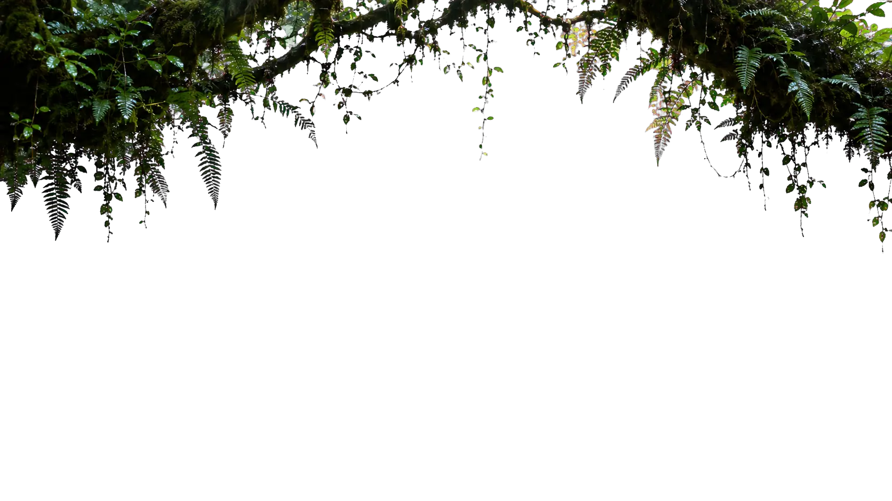
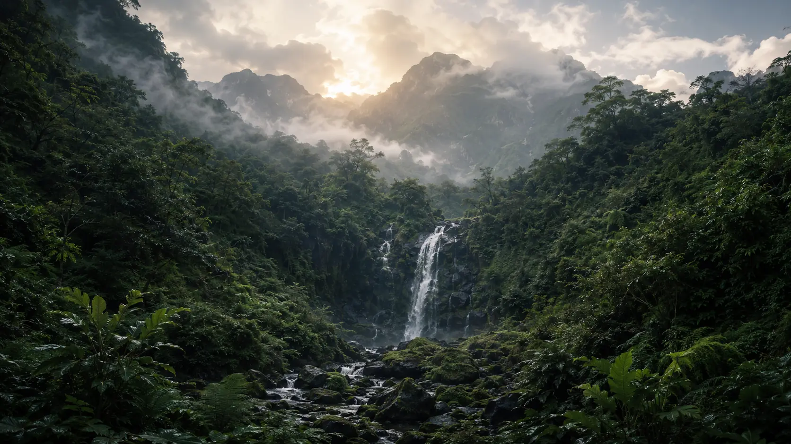
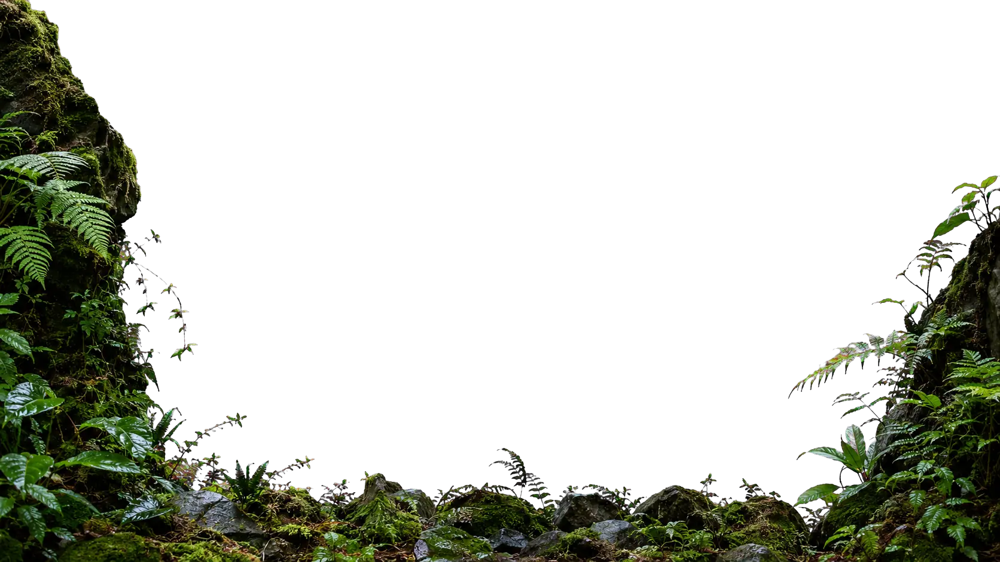
The expedition at a glance
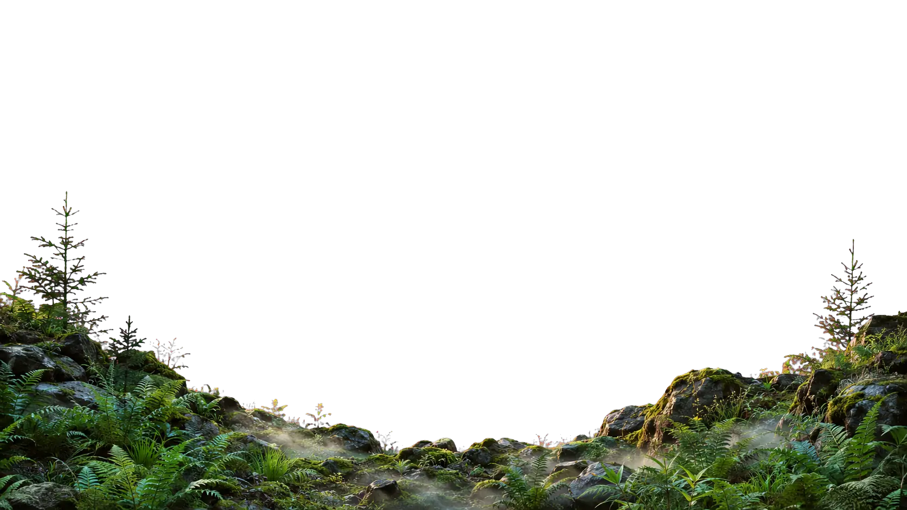
The participant journey
From the first application to continuing the practices at home. Each stage has a clear purpose and a safety decision.
Stage 01 · Apply
Share your diabetes journey and why this expedition matters to you.
Initial application · 8–10 minutesStage 02 · Prepare for 45 days
Follow the daily program and progress gradually.
About one focused hour each morningStage 03 · Final clearance
Participation remains conditional on medical and fitness clearance.
Safety decision · before departureStage 04 · Join the expedition
Complete the supported six-day route with the selected group.
World Diabetes Day goal · 14 Nov 2026Stage 05 · Return and continue
Bring the learning home and continue the practices beyond the mountain.
Responsible return · long-term continuity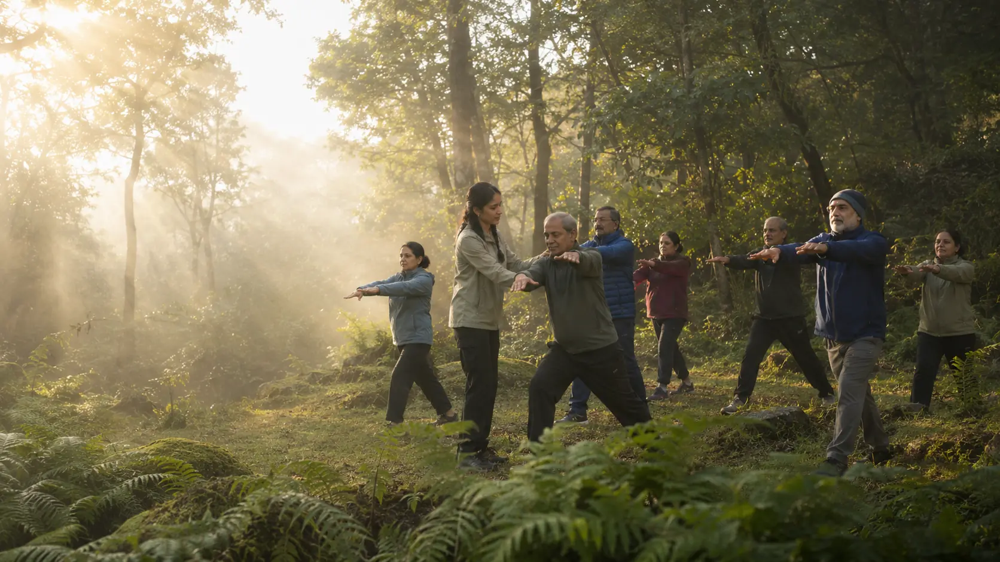
45 Days Training
45 days of preparation across five connected pillars.
Baseline assessment, treating-physician coordination, regular monitoring and final medical clearance.
Nutrition, sleep, recovery and sustainable routines that support metabolic health.
Progressive walking, strength, mobility, stamina and practical readiness for the trail.
Stress management, breathwork, meditation and mental preparation for demanding days.
Group accountability, shared learning, regular check-ins and support throughout the journey.
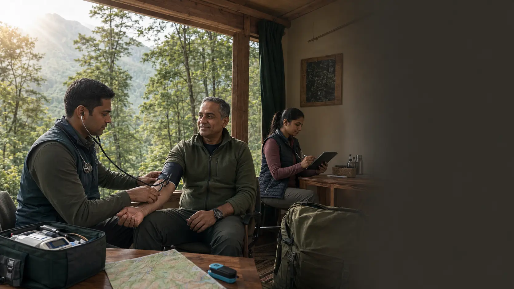
Safety and screening
Final participation depends on medical review. Medical and mountain-safety decisions take priority over personal goals at every stage.
Health history, baseline investigations and physician approval.
Physical and mental fitness before the expedition.
Fitness Certificate from the treating physician and medical approval from the Nirog Bhumi designated consultant.
Daily checks, trained expedition professionals and emergency response protocols.
Before you apply
Eligibility
Every application remains subject to individual medical screening and final medical clearance. Application does not guarantee selection.
Ready for the first step?Apply Now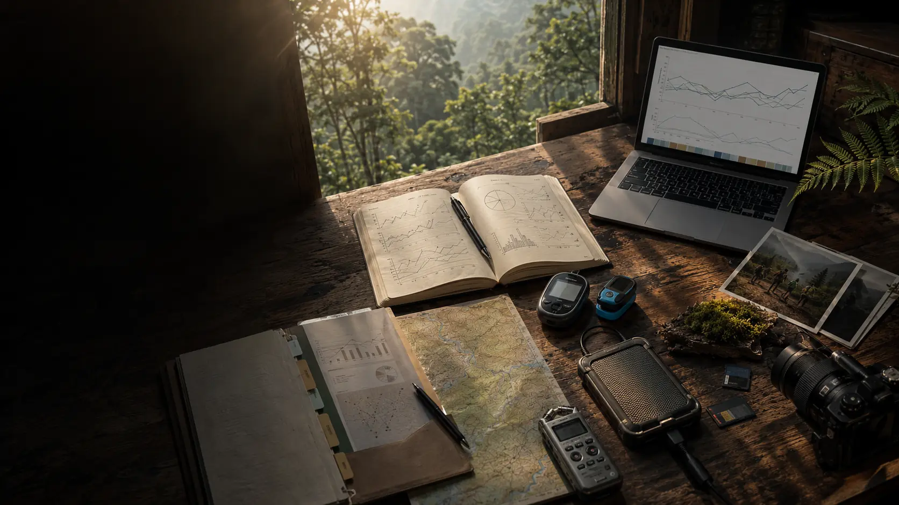
Updates and Learnings
Preparation updates, participant voices and responsible group-level observations will appear here as the journey progresses.
“I want to stop seeing diabetes as a limitation.”
“I have never imagined myself in the Himalayas.”
“I want my family to see what consistent effort can make possible.”
Photograph and city
Brief diabetes journey
Why they applied
What they fear
What they hope to achieve
Preparation updates
Preparation methodology and adherence
Aggregate, anonymised health observations
Participant Reflections
Photography and short films
Safety and Operational Learnings
Final report and future recommendations
Ways to come on board
Participate, nominate, support the work or follow the journey.
Apply to join the expedition and the 45-day preparation journey.
Apply Now 02Recommend a person living with Type 2 diabetes.
Nominate ↗Medical knowledge, equipment, travel, logistics or responsible storytelling.
Health · Support · MediaReceive preparation stories and key updates.
Follow ↗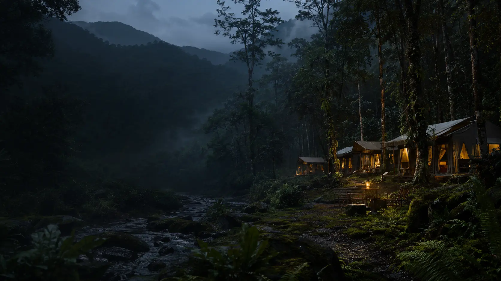
Applications nationwide
The application takes about 8–10 minutes. Applying does not guarantee selection, and clinical documents will only be requested later through an approved secure process.
Apply NowFAQs
The expedition is designed to explore how structured preparation, daily movement, medical screening, and community support can help people living with Type 2 diabetes or prediabetes build confidence and sustainable routines while preparing for a carefully planned Himalayan trek.
The experience is intended to help participants build confidence, strengthen daily routines, connect with a supportive community, and carry practical habits such as exercise, meditation, and alignment with the circadian rhythm beyond the expedition. Individual experiences and outcomes may vary.
Participants follow an approximately one-hour morning routine of yogic practices, meditation and physical fitness. The programme also builds walking capacity, strength, mobility, consistency and readiness for the trek.
No previous trekking experience is required. The planned route is suitable for physically fit beginners, but every participant must complete the preparation program and receive final medical clearance.
The reference route covers about 21 km over four trekking days within a six-day journey. It rises from roughly 7,100 ft to 11,830 ft, with gradual sections as well as some steeper forest and meadow climbs.
Work towards steady walking endurance, stronger legs and core, better balance, mobility and the ability to recover between active days. Final readiness will be assessed through programme participation, submitted medical information and final medical clearance.
Our partners
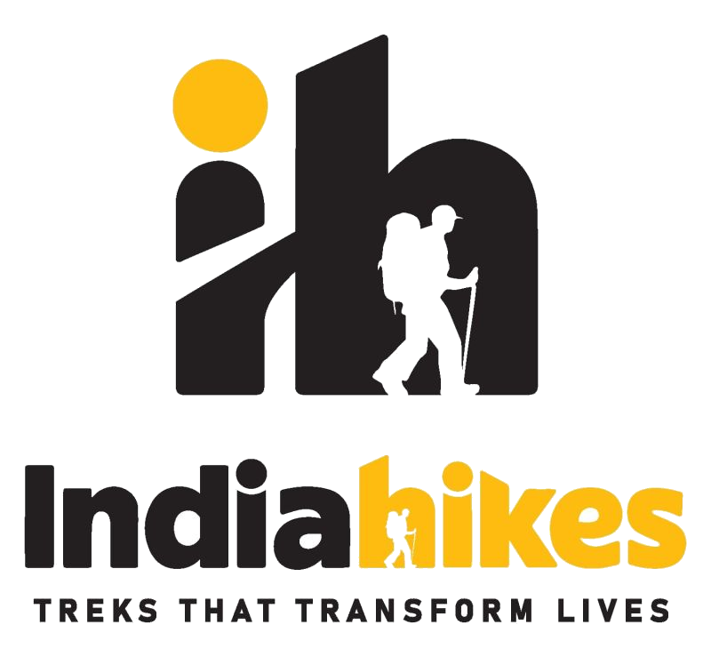